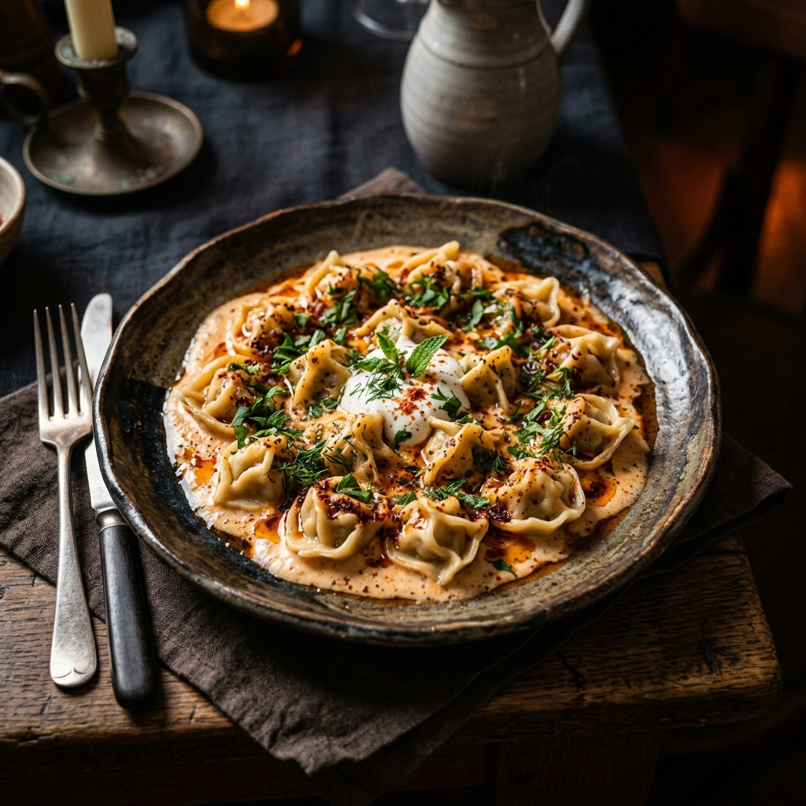
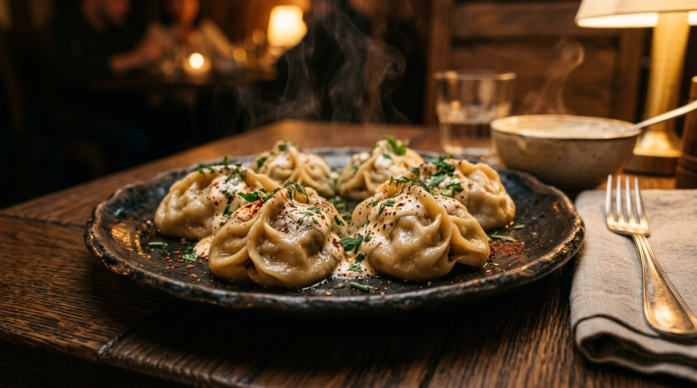
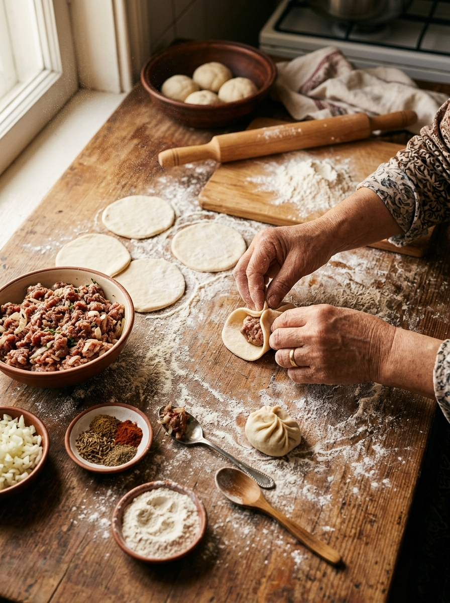
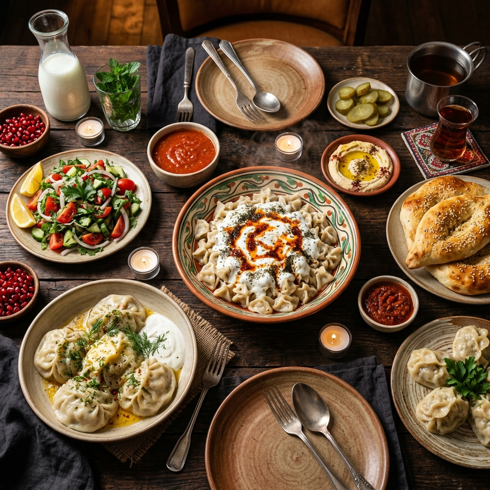
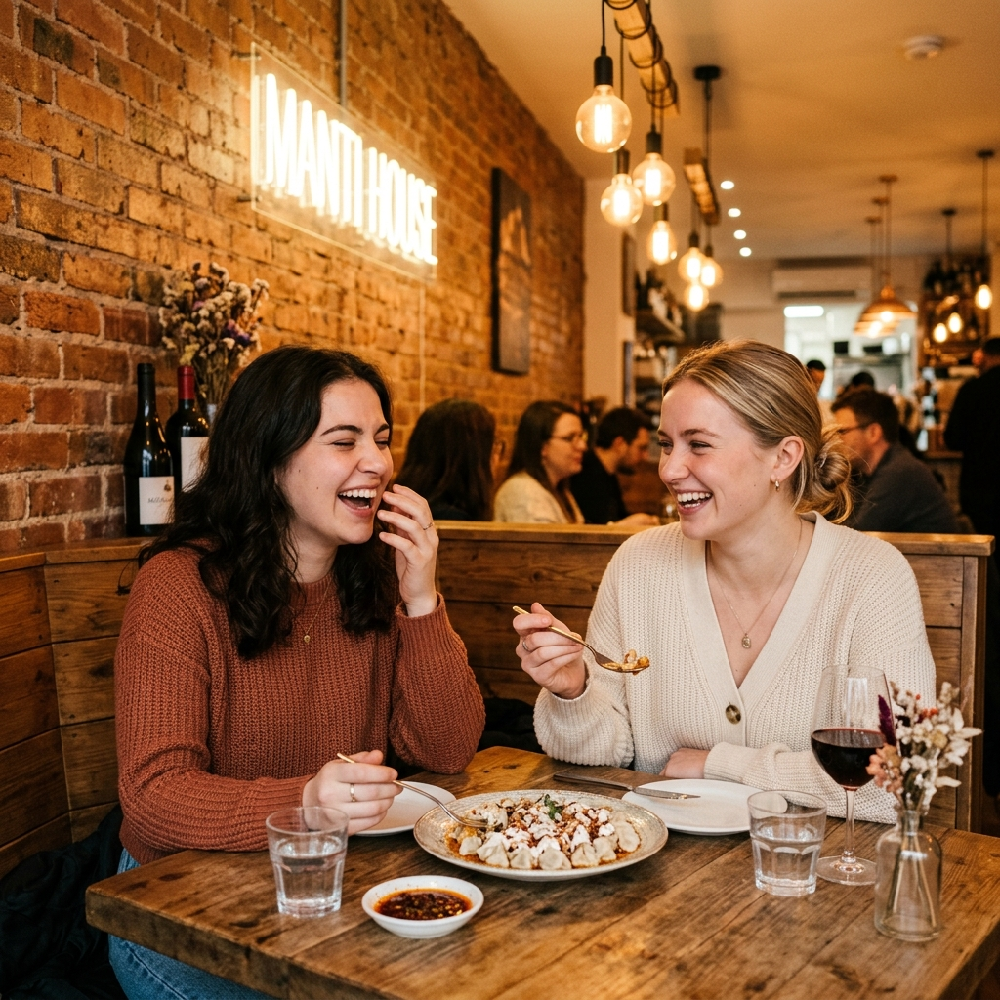
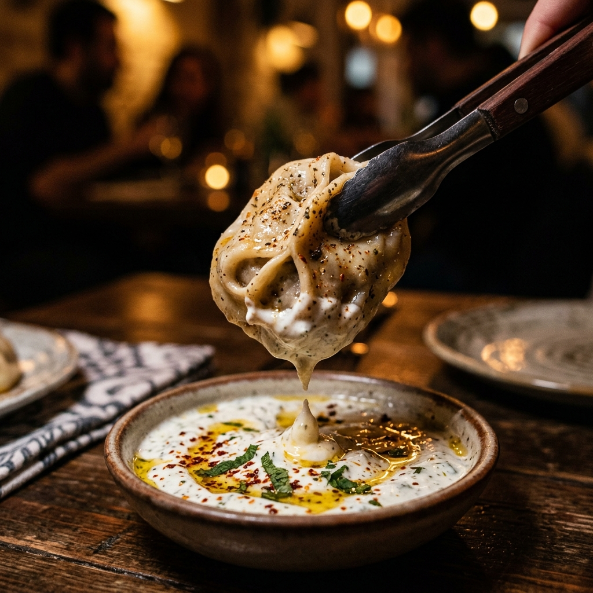
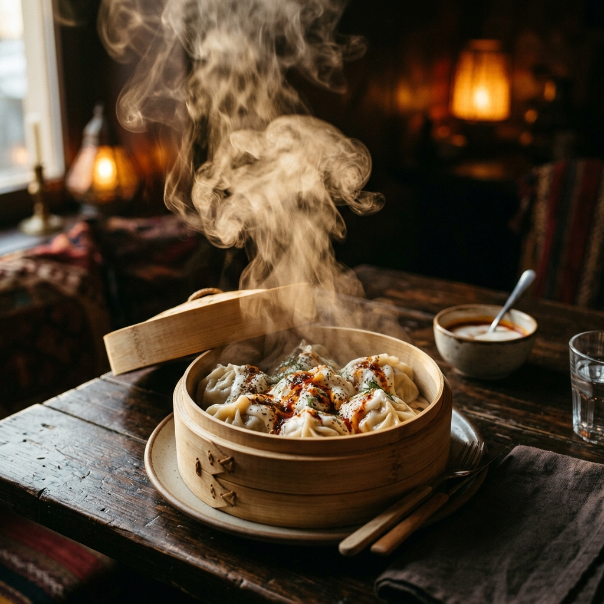
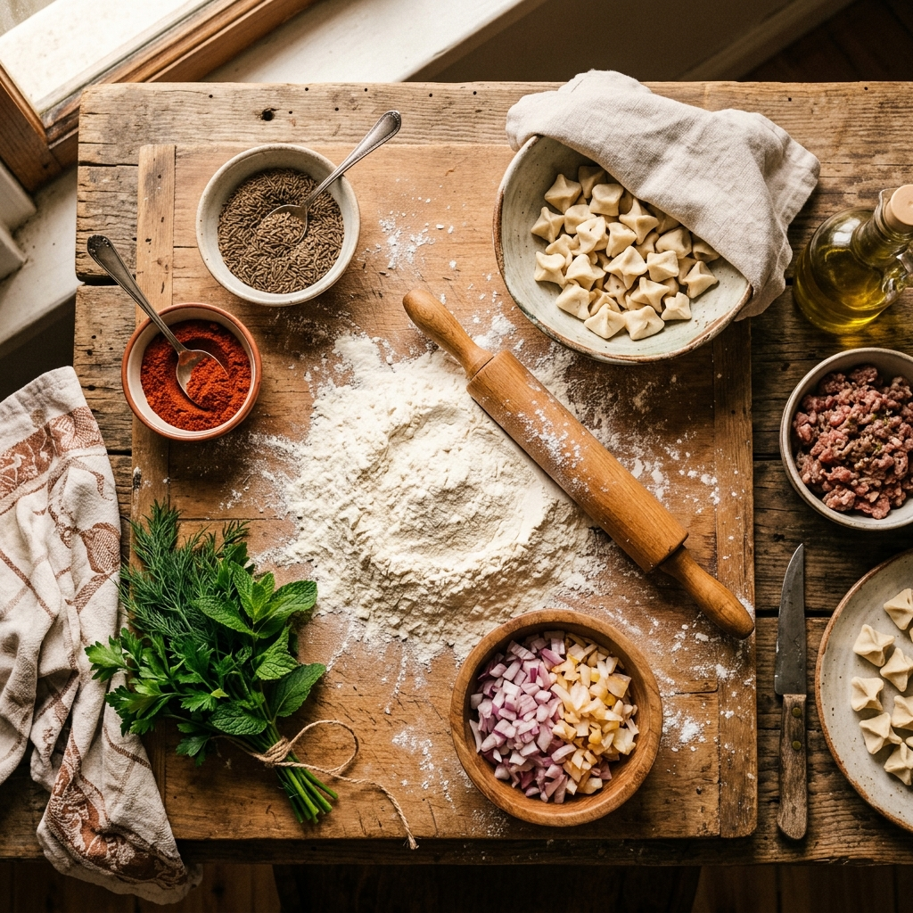

BeliebtClassic Manti
Handgemachte Manti mit Rindfleisch, Zwiebeln und Gewürzen.
€ 12,90

Handgemachte Manti. Zentralasiatische Tradition. Neu gedacht für Deutschland.

MANTI HAUS bringt eines der beliebtesten Gerichte Zentralasiens nach Deutschland: Manti.
Kleine, handgemachte Teigtaschen, gefüllt mit saftigem Fleisch, Zwiebeln und ausgewählten Gewürzen.
Traditionelle Zubereitung trifft auf modernes Food-Konzept.
Manti sind kleine Teigtaschen, die traditionell von Hand gefüllt und gedämpft werden.
Außen zarter Teig.
Innen eine würzige Füllung.
Oben drauf unsere eigene Sauce.
Ein Bissen und du verstehst, warum Manti in Zentralasien so beliebt sind.
Frischer Teig, dünn ausgerollt und in perfekte Quadrate geschnitten.
Saftiges Fleisch, fein gehackte Zwiebeln und aromatische Gewürze.
Schonend gedämpft, bis der Teig zart und die Füllung saftig ist.
Jeder Schritt wird mit Sorgfalt und Hingabe ausgeführt.
Frischer Teig wird von Hand zu hauchdünnen Blättern ausgerollt.
Jedes Stück wird sorgfältig mit der frischen Füllung befüllt.
Die traditionelle Falttechnik verleiht jedem Manti seine einzigartige Form.
Langsam und schonend gedämpft für die perfekte Textur.
Mit unserer Hausmarinade und frischen Kräutern serviert.
Jedes Manti wird von Hand geformt. Keine Maschinen, keine Abkürzungen.
Täglich frisch zubereitet. Wir machen keine Kompromisse bei der Qualität.
Inspiriert von zentralasiatischer Küche — Rezepte mit Geschichte.
Tradition trifft modernes Food-Konzept. Für den Geschmack von heute.
Manti gehören in Zentralasien seit Generationen zum Alltag.
Bei MANTI HAUS bringen wir diese Tradition nach Deutschland.
Nicht als Museumsstück.
Sondern als modernes Essen, das man gerne mit Freunden, Familie und Kollegen teilt.
"Gutes Essen verbindet — über alle Grenzen hinweg."
Erlebe MANTI HAUS persönlich. Wir freuen uns auf deinen Besuch.
Warm, frisch und handgemacht. Bestelle deine Manti und probiere etwas Neues.
Folge dem Duft.
📸 @manti.haus



